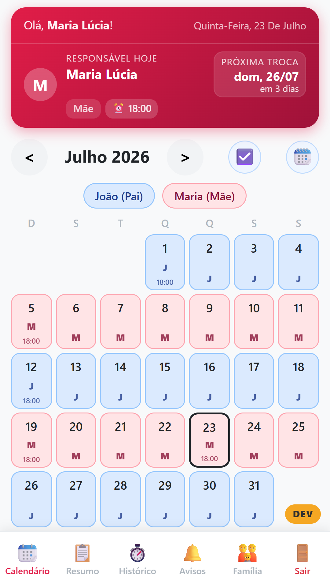
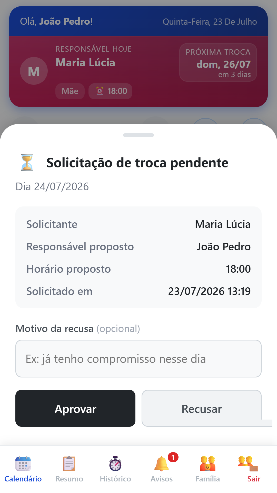
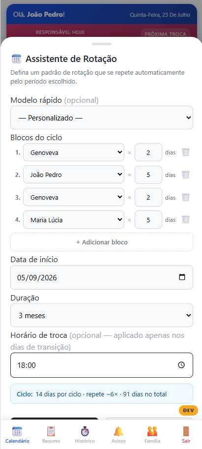
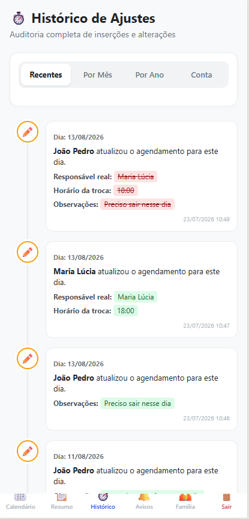
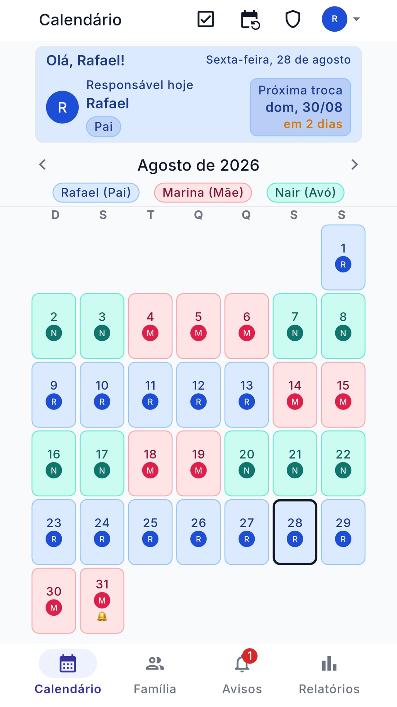
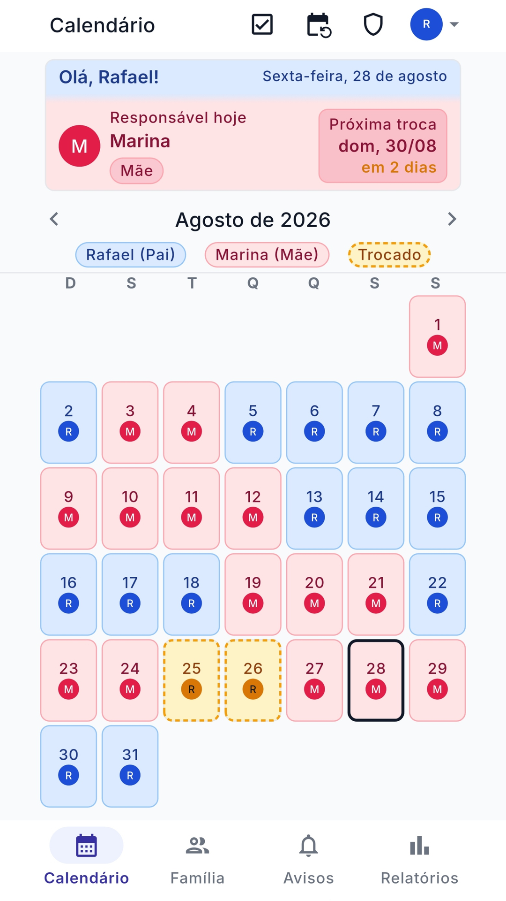
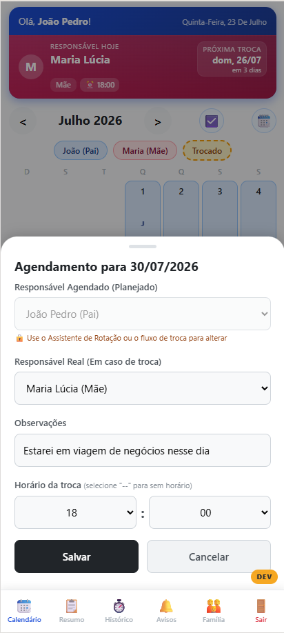
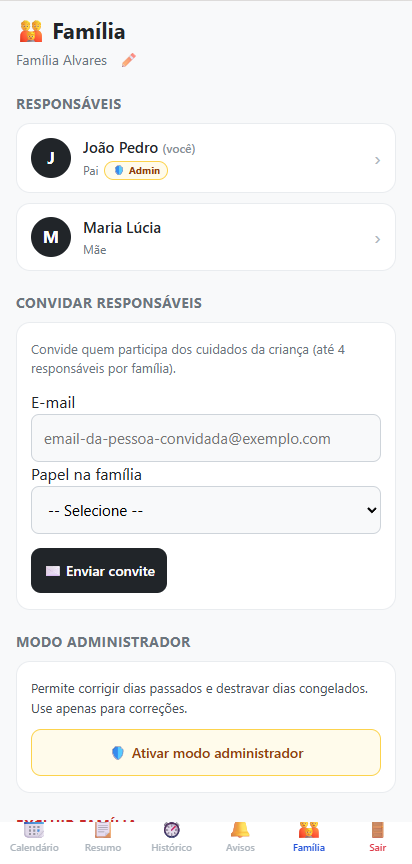

O app que organiza a convivência dos seus filhos na guarda compartilhada: calendário claro, trocas de dia com aprovação dos dois responsáveis e um histórico que não pode ser editado nem apagado — o registro de tudo o que foi combinado, preservado exatamente como foi feito.





Veja de quem é o dia — hoje e nos próximos
Três passos para tirar o calendário do WhatsApp e acabar com o "mas você disse que…".
Cada um acessa com a própria conta. Dá para incluir também avós e outros cuidadores que participam da rotina.
Defina de quem é cada dia conforme o acordo de vocês — semanas alternadas, dias fixos, feriados. O app mostra sempre quem é o responsável hoje e nos próximos dias.
A troca só vale quando o outro responsável aprova. Nada muda por decisão de um só — e tudo fica registrado, com data e hora.
Telas reais do aplicativo — do calendário do dia a dia aos detalhes que dão segurança para os dois lados.

No dia do outro responsável, o card mostra as duas cores.

Defina o responsável, o horário da troca e uma observação para cada dia.

Convide o outro responsável e outros cuidadores por e-mail.
Porque combinado que fica no chat vira discussão. O app existe justamente para tirar a convivência do "eu não fiquei sabendo".
Cada detalhe existe para responder rápido a uma pergunta e evitar uma discussão.
Abra e veja na hora de quem é o dia — hoje, amanhã e no mês inteiro. Cores diferentes para cada responsável.
Qualquer mudança de dia vira uma solicitação que o outro aprova ou recusa. Sem surpresas, sem "eu não fiquei sabendo".
Cada troca, aprovação e alteração fica registrada com data e hora, num histórico que não pode ser editado nem apagado. Se o combinado um dia virar discussão, ele está lá — preto no branco.
Solicitação de troca, aprovação, lembrete: você fica sabendo na hora, por notificação e por e-mail.
Avós, madrastas, padrastos e outros cuidadores podem participar da família e assumir dias, com as mesmas regras de aprovação.
Os dados da sua família são visíveis apenas para quem faz parte dela. Sem anúncios, sem venda de dados.
Este app não nasceu numa reunião de negócios. Nasceu de uma necessidade real, dentro da minha própria família.
Fui casado por 20 anos, e dessa união veio o bem mais precioso da minha vida: meu filho. Quando eu e a mãe dele entendemos que o casamento não seguiria, escolhemos a separação pensando no bem de todos — inclusive no dele.
De repente, tudo era novo: casa, rotina, hábitos. Mas uma coisa não mudou — a vontade de estar presente na vida do meu filho. No meio dos atritos naturais de uma separação recente, o que mais precisávamos era justamente o que parecia mais difícil: dar estabilidade e previsibilidade a uma criança pequena, com a rotina de trabalho intensa da mãe dele.
Precisávamos, os dois, saber com clareza de quem era cada dia. Tentei uma planilha — ajudou no começo, mas logo ficou complicada e nunca estava à mão na hora certa. Tentei um calendário comum — complexo demais de manter. Então criei uma solução própria, simples, que foi crescendo até virar um verdadeiro parceiro na convivência com meu filho.
Conversando com outros pais e mães que passaram pela separação, senti a mesma carência. Por isso decidi abrir esta ferramenta para mais famílias — para tirar esse atrito do caminho num momento tão delicado, que se supera com carinho, amor e, acima de tudo, respeito entre todas as partes.

O Entrelares é um aplicativo web (PWA): instala direto do navegador, sem loja, e abre como qualquer app — com ícone na tela inicial.
O essencial é gratuito. O Premium libera os recursos avançados — uma assinatura por família, não por pessoa.
Tudo o que o casal precisa para organizar a convivência — sem cartão de crédito, sem pegadinha.
ou R$ 54,90/ano — 2 meses grátis
🎉 Preço promocional de lançamento
Para famílias que precisam de mais gente e mais alcance — cobre todos os responsáveis.
🛡️ Garantia de 7 dias: assinou e se arrependeu? Em até 7 dias após o pagamento, devolvemos o valor integral (art. 49 do CDC) — é só escrever para suporte@entrelares.app.
Pague por Pix — QR code pelo aplicativo do seu banco, sem informar dados de cartão — ou por cartão de crédito, sempre em ambiente seguro do provedor (Asaas). Cancele quando quiser: o período pago continua valendo até o fim e nenhum dado é apagado — os recursos Premium apenas voltam a ficar bloqueados. A assinatura é feita dentro do app, na página da família, por um administrador.
Do conceito ao dia a dia no app — o que os pais mais perguntam antes de começar.
Um guia visual em PDF com as formas mais comuns de dividir os dias entre os responsáveis — para vocês conversarem a partir de exemplos claros, não do zero.
Crie a conta, monte o calendário e convide o outro responsável. Em dez minutos, a rotina dos seus filhos sai do bate-boca e entra num combinado claro.
Começar agora — é grátis